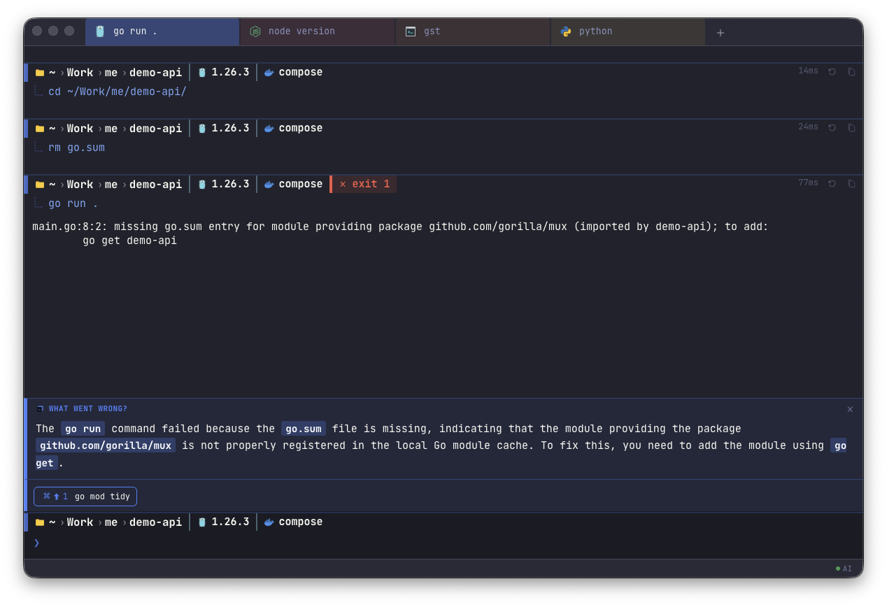
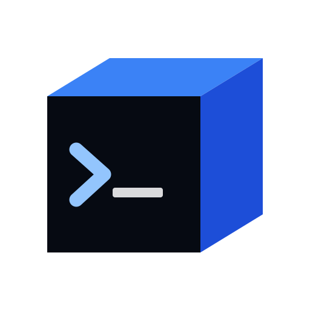
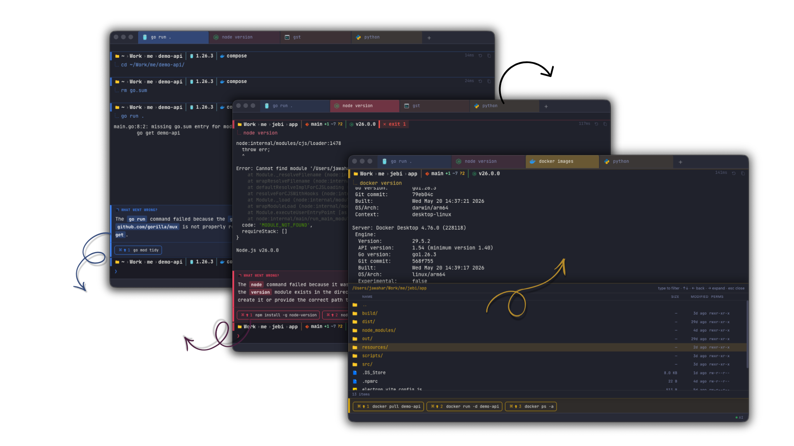
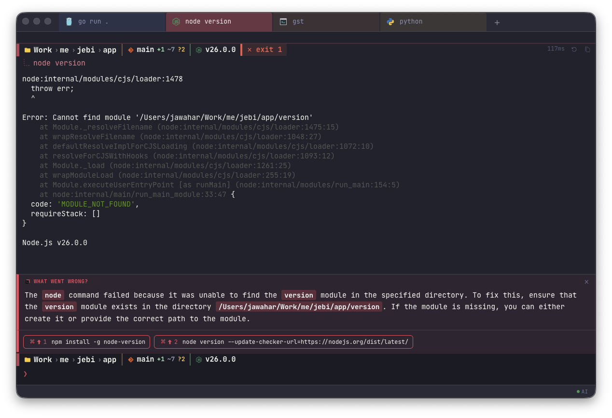
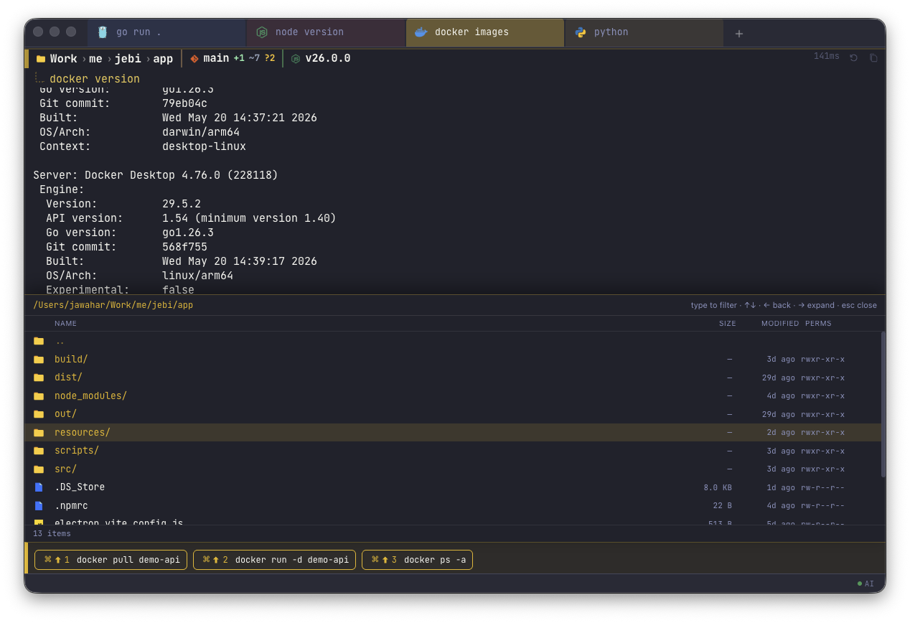

Reads the error before you rage-scroll
When a command faceplants, jebi turns the stack trace confetti into a short explanation and a likely fix.
panic - parsed
jebijebi explains failed commands, suggests the next move, and politely tells you when the problem is not Docker, not npm, and unfortunately, probably you.
$local-first AI help, because your terminal context should not need a backpack!turns red errors into readable next steps before Stack Overflow warms up?works best with developers who definitely meant to type that command$ brew tap jebi-sh/tap
$ brew install --cask jebi
or download directly

Big screenshots because terminal details should not require detective zoom or a second monitor named "enhance."

When a command faceplants, jebi turns the stack trace confetti into a short explanation and a likely fix.
panic - parsed
After every command, jebi offers three useful follow-ups, because “now what?” is not a workflow.
three hints, no standup
Open files, inspect ports, pick Makefile or npm scripts, and define your own shortcuts without starting a tiny archaeology project.
/ls /ports /runLocal-first AI help, modern terminal ergonomics, and themes that understand your monitor is not supposed to interrogate your eyeballs.
Keep assistance close to your machine and your workflow, where the “works on my machine” prophecy begins.
Fast, smooth terminal drawing, because laggy text makes every typo feel legally binding.
Catppuccin, Tokyo Night, Dracula, Nord, Gruvbox, One Dark, Monokai, and other respectable ways to avoid default gray.
New tabs, splits, search, preferences, and palette controls feel familiar, which is a feature and also a public service.
Built-in shortcuts for terminal chores that somehow became everyone's unpaid platform engineering rotation.
/ls
Browse files with preview, because opening Finder mid-flow is where focus goes to nap.
/ports
Inspect live network ports and find the process squatting on localhost like it pays rent.
/run
Pick from Makefile and npm scripts without guessing whether this repo believes in dev, start, or chaos.
/commands
Add your own shortcuts in Preferences, then pretend this was always your natural productivity level.
macOS - Apple Silicon and Intel. No account required. Homebrew if you like commands, direct downloads if you have already typed enough today.